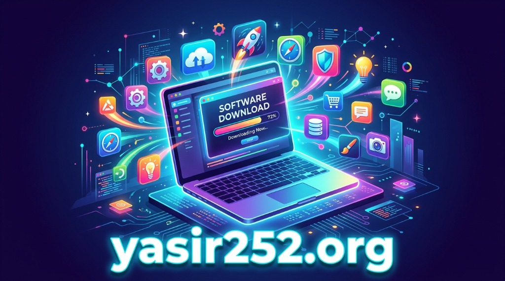
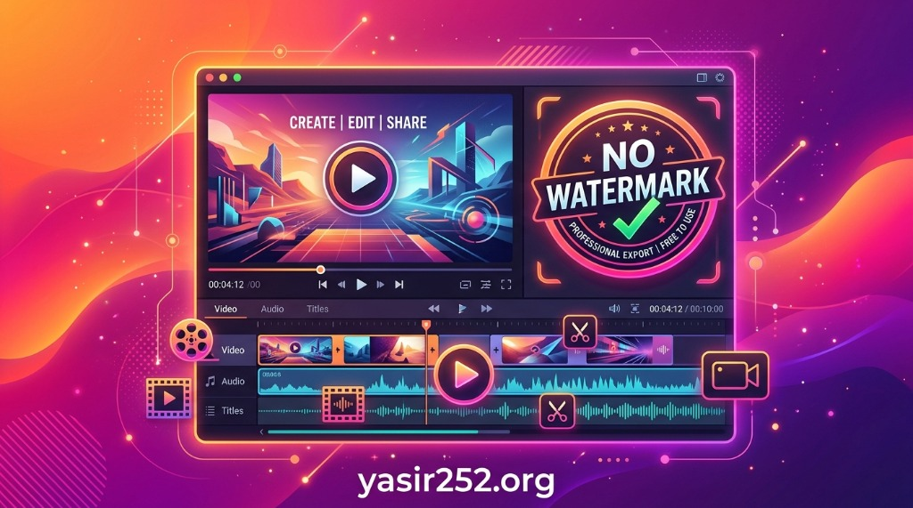
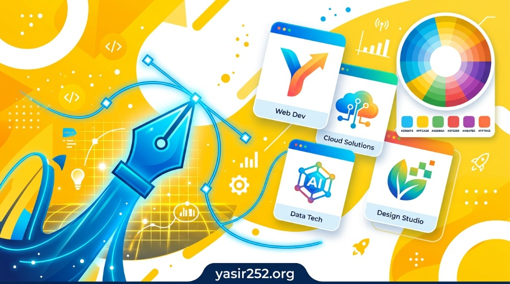
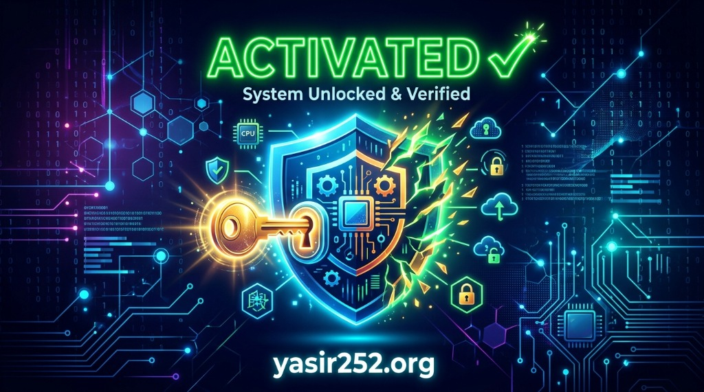

Ribuan software PC premium tersedia gratis di Yasir252. Dari video editor, desain grafis, aktivator Windows, hingga download manager — semua ada, semua gratis, semua aman.

Yasir252 adalah platform download software gratis terpercaya yang telah melayani jutaan pengguna di seluruh Indonesia dan Asia Tenggara. Berdiri dengan misi sederhana namun kuat — membuat software premium dapat diakses oleh semua orang tanpa terkecuali — Yasir252 telah berkembang menjadi salah satu sumber software gratis terbesar dan terpercaya di internet.
Di era digital ini, kebutuhan akan software berkualitas semakin meningkat. Mulai dari pelajar yang membutuhkan tools desain untuk tugas sekolah, freelancer yang memerlukan software editing video profesional, hingga wirausahawan kecil yang membutuhkan suite produktivitas untuk mengelola bisnis mereka — semua menghadapi satu tantangan yang sama: harga lisensi software yang sangat mahal dan sering kali tidak terjangkau.
Yasir252 hadir sebagai jawaban atas tantangan tersebut. Platform ini menyediakan ratusan software premium — mulai dari aktivator sistem operasi Windows, download manager, video editor profesional, hingga suite desain grafis kelas dunia — semuanya tersedia secara gratis, lengkap dengan panduan instalasi yang detail dan mudah diikuti.
Visi Yasir252 adalah menjadi platform download software gratis paling terpercaya dan terlengkap di Indonesia. Setiap software yang dipublikasikan melalui platform ini melewati proses verifikasi dan pengujian yang ketat — memastikan bahwa file yang Anda download bersih dari virus, malware, adware, dan segala bentuk ancaman siber lainnya.
Misi Yasir252 meliputi: pertama, menyediakan software premium berkualitas tinggi secara gratis kepada seluruh lapisan masyarakat Indonesia; kedua, memastikan keamanan setiap file yang didistribusikan melalui platform; ketiga, menyediakan panduan instalasi yang komprehensif sehingga pengguna dari berbagai latar belakang teknis dapat menggunakan software dengan mudah; dan keempat, terus memperbarui koleksi software agar selalu tersedia versi terbaru dan paling stabil.
Yasir252 memulai perjalanannya sebagai blog teknologi sederhana yang berbagi tips dan software berguna. Seiring berjalannya waktu, dengan semakin besarnya kepercayaan dari komunitas pengguna Indonesia, platform ini berkembang pesat menjadi portal download software terlengkap yang kini dikenal dan dipercaya oleh jutaan orang.
Salah satu faktor kunci di balik kesuksesan Yasir252 download software gratis terpercaya pilihan jutaan pengguna Indonesia adalah komitmen yang tidak pernah goyah terhadap kualitas dan keamanan. Di saat banyak platform serupa mengabaikan aspek keamanan demi keuntungan semata, Yasir252 justru menempatkan kepercayaan pengguna sebagai prioritas utama yang tidak bisa dikompromikan.
💡 Tahukah Anda? Yasir252 melakukan pemindaian keamanan pada setiap file menggunakan lebih dari 70 engine antivirus sebelum dipublikasikan. Ini memastikan bahwa setiap download di Yasir252 benar-benar aman untuk sistem Anda.
Yasir252 menghadirkan koleksi software yang sangat beragam — mencakup hampir semua kebutuhan digital Anda. Berikut adalah software-software paling populer yang paling banyak diunduh oleh pengguna setia Yasir252:

Salah satu kategori paling populer di Yasir252 adalah software aktivasi. Ribuan pengguna setiap harinya mengunjungi Yasir252 untuk mendapatkan solusi aktivasi Windows dan Microsoft Office yang aman dan terpercaya.
Bagi yang sering mengunduh file berukuran besar, download manager adalah kebutuhan mutlak. Yasir252 menyediakan solusi terbaik untuk kebutuhan ini. Pencarian yasir252 idm dan download idm yasir252 selalu menjadi salah satu pencarian paling populer di platform ini.
Era konten digital telah menjadikan video editing sebagai keahlian yang sangat dibutuhkan. Yasir252 hadir dengan koleksi video editor premium yang bisa digunakan tanpa biaya apapun. Banyak kreator konten Indonesia yang mencari filmora yasir252 dan yasir252 filmora untuk memulai perjalanan mereka sebagai content creator.
Dari mahasiswa desain komunikasi visual hingga pemilik usaha percetakan, Yasir252 menyediakan tools desain profesional yang dibutuhkan semua kalangan.

Di antara ratusan situs download software yang beredar di internet, Yasir252 memiliki beberapa keunggulan mendasar yang membuatnya menonjol dan menjadi pilihan utama jutaan pengguna Indonesia:
Setiap file yang dipublikasikan di Yasir252 melewati pemindaian keamanan menggunakan lebih dari 70 engine antivirus. Tidak ada malware, spyware, adware, atau program berbahaya lainnya yang bisa lolos dari proses verifikasi ketat kami.
Tim Yasir252 secara aktif memantau rilis terbaru setiap software dan segera melakukan pembaruan. Anda selalu mendapatkan versi software yang paling stabil, paling kompatibel, dan paling lengkap fiturnya.
Setiap software di Yasir252 dilengkapi panduan instalasi dengan foto step-by-step yang mudah diikuti oleh siapapun, termasuk pengguna yang baru pertama kali berkenalan dengan dunia software komputer.
Tidak ada biaya tersembunyi, tidak perlu mendaftar akun premium, tidak ada batasan download. Semua software di Yasir252 benar-benar gratis untuk diunduh dan digunakan kapan saja tanpa batas waktu.
Yasir252 memiliki jadwal update yang konsisten. Software baru ditambahkan setiap minggu berdasarkan permintaan komunitas dan tren terkini, memastikan koleksi selalu relevan dengan kebutuhan pengguna.
Bergabunglah dengan jutaan pengguna Yasir252 yang aktif berbagi pengalaman, tips instalasi, dan solusi masalah di kolom komentar setiap halaman software. Komunitas yang solid membuat pengalaman download Anda semakin menyenangkan.
Keamanan adalah fondasi utama yang tidak pernah kami kompromikan di Yasir252. Setiap file yang masuk ke sistem kami melewati serangkaian proses verifikasi yang komprehensif:
File dipindai menggunakan lebih dari 70 engine antivirus secara bersamaan melalui VirusTotal dan platform pemindai independen lainnya.
Software dijalankan dalam lingkungan virtual terisolasi untuk memantau perilaku program — memastikan tidak ada aktivitas mencurigakan yang terjadi di background.
Tim teknis Yasir252 menguji setiap fitur software untuk memastikan semua fungsi bekerja sebagaimana mestinya sebelum dipublikasikan kepada pengguna.
Setelah dipublikasikan, pengguna dapat memberikan feedback melalui kolom komentar. Laporan masalah ditangani dengan cepat dan file diperbarui atau dihapus jika diperlukan.
Proses download software di Yasir252 dirancang sesimpel mungkin agar dapat diikuti oleh siapapun. Berikut panduan lengkap cara mengunduh software dari Yasir252:
Buka browser Anda dan ketik yasir252.org di address bar. Anda akan langsung masuk ke halaman utama yang menampilkan koleksi software terpopuler dan terbaru.
Gunakan fitur pencarian di bagian atas halaman untuk menemukan software yang Anda inginkan. Atau, jelajahi kategori yang tersedia: Aktivator, Video Editor, Desain Grafis, Download Manager, Utilitas, dan lainnya.
Sebelum download, baca terlebih dahulu deskripsi software, persyaratan sistem minimum, dan informasi versi untuk memastikan software kompatibel dengan spesifikasi PC atau laptop Anda.
Beberapa software aktivator dan tools tertentu mungkin terdeteksi oleh antivirus karena alasan heuristik (bukan karena benar-benar berbahaya). Nonaktifkan sementara antivirus Anda sebelum mengunduh dan menginstal.
Klik tombol download yang tersedia di halaman software. File akan mulai diunduh langsung ke komputer Anda. Gunakan IDM untuk hasil download yang lebih cepat dan stabil.
Setelah download selesai, ikuti panduan instalasi yang tersedia di halaman software Yasir252. Panduan ini dilengkapi dengan screenshot setiap langkahnya.

🔒 Selalu download dari URL resmi yasir252.org. Banyak situs tiruan yang mengklaim sebagai Yasir252 namun menyisipkan file berbahaya. Pastikan URL di browser Anda benar-benar menunjukkan yasir252.org sebelum mengklik tombol download apapun.
Tips tambahan untuk pengalaman download yang aman dan nyaman di Yasir252:
Yasir252 mengorganisir koleksi softwarenya ke dalam berbagai kategori yang memudahkan pengguna menemukan apa yang mereka butuhkan. Berikut adalah daftar lengkap kategori yang tersedia:
KMSpico, KMSAuto, Windows Activator, Office Tools, dan berbagai solusi aktivasi lainnya.
Filmora, CapCut PC, DaVinci Resolve, dan software editing video profesional lainnya.
CorelDraw, Photoshop, Illustrator, InDesign, dan software desain premium lainnya.
IDM, Internet Download Manager, dan tools akselerasi download terbaik.
Microsoft Office, WPS Office, PDF editor, dan alat produktivitas bisnis.
WinRAR, 7-Zip, CCleaner, Driver Booster, dan alat optimasi PC.
Software gaming, game utilities, dan aplikasi hiburan. Pencarian yasir252 game selalu tersedia di kategori ini.
Enscape, SketchUp, AutoCAD, dan software desain arsitektur. Populer untuk pencarian yasir252 enscape.
FL Studio, Audacity, software produksi musik, dan alat editing audio profesional.
Yasir252 tidak hanya melayani pengguna Windows, tetapi juga menyediakan koleksi software untuk platform Mac. Salah satu pencarian yang sangat populer adalah download word yasir252 mac — dan ya, Yasir252 menyediakan versi Microsoft Word dan Office Suite yang kompatibel untuk perangkat Mac.
Selain itu, berbagai software produktivitas, desain, dan multimedia yang kompatibel dengan macOS juga tersedia di Yasir252, memastikan pengguna Mac mendapatkan pengalaman yang sama baiknya dengan pengguna Windows.
Yasir252 secara khusus memperhatikan kebutuhan komunitas pelajar dan mahasiswa Indonesia. Banyak software di platform ini yang sangat relevan untuk kegiatan akademis — dari software desain untuk mahasiswa DKV, software arsitektur untuk mahasiswa teknik, hingga suite produktivitas untuk mengerjakan tugas dan laporan.
Dengan mengunjungi Yasir252, para pelajar dapat mengakses software yang sama dengan yang digunakan oleh para profesional industri — tanpa harus mengorbankan uang jajan atau meminta dana extra kepada orang tua mereka.
Mendapatkan software gratis yang berkualitas hanyalah langkah pertama. Berikut adalah tips-tips dari tim Yasir252 untuk memastikan Anda dapat memaksimalkan setiap software yang Anda unduh:
Sebelum menginstal software apapun — terutama software sistem seperti aktivator Windows — selalu buat backup data penting Anda terlebih dahulu. Meskipun software di Yasir252 sudah diverifikasi aman, kebiasaan backup adalah praktik yang baik untuk melindungi data Anda dari kemungkinan tidak terduga apapun.
Gunakan fitur Restore Point Windows (System Properties → System Protection → Create) untuk membuat titik pemulihan sistem sebelum instalasi besar. Ini memungkinkan Anda untuk kembali ke kondisi sistem sebelumnya jika ada masalah yang tidak diinginkan.
Jika Anda sering mengunduh file besar dari Yasir252, sangat direkomendasikan untuk menggunakan Internet Download Manager (IDM) yang juga tersedia gratis di Yasir252. IDM dapat meningkatkan kecepatan download hingga 5 kali lipat dengan teknologi segmentasi multi-bagian yang membagi satu file menjadi beberapa segmen yang diunduh secara bersamaan.
Selain itu, IDM memiliki fitur resume yang sangat handal — jika koneksi internet Anda terputus di tengah proses download, IDM akan melanjutkan dari titik terakhir tanpa harus mengulang dari awal. Fitur ini sangat berguna saat mengunduh file ISO atau installer berukuran beberapa gigabyte.
Setelah berhasil menginstal software pilihan Anda, luangkan waktu untuk mempelajari fungsi-fungsi dasarnya. Yasir252 tidak hanya menyediakan software tetapi juga artikel panduan penggunaan yang dapat membantu Anda memaksimalkan potensi setiap software.
Untuk software kreatif seperti Filmora atau CorelDraw, tersedia banyak tutorial di YouTube dalam bahasa Indonesia yang bisa Anda ikuti bersama dengan software yang sudah Anda download dari Yasir252. Investasi waktu untuk belajar akan menghasilkan produktivitas yang jauh lebih tinggi.
Salah satu aset terbesar Yasir252 adalah komunitasnya yang aktif dan saling membantu. Di kolom komentar setiap halaman software, Anda akan menemukan ribuan pengguna yang berbagi pengalaman, tips, dan solusi atas masalah yang mereka hadapi.
Jika Anda mengalami kesulitan dalam instalasi atau penggunaan software tertentu, jangan ragu untuk meninggalkan komentar. Komunitas Yasir252 yang solid akan membantu Anda menemukan solusi dengan cepat.
Software berkembang dengan cepat. Versi baru biasanya membawa perbaikan bug, peningkatan performa, dan fitur-fitur baru yang berguna. Biasakan untuk secara rutin mengecek halaman software favorit Anda di Yasir252 untuk melihat apakah sudah ada versi terbaru yang tersedia.
Tim Yasir252 secara aktif memantau rilis terbaru dan segera memperbarui halaman software begitu versi baru yang stabil tersedia. Anda bisa membookmark halaman-halaman software favorit Anda untuk memudahkan pengecekan rutin.
🎯 Pro Tip dari Yasir252: Gunakan fitur pencarian dengan kata kunci yang spesifik untuk menemukan software dengan lebih cepat. Misalnya, ketik "yasir252 photoshop 2024" atau "download CorelDraw X7 yasir252" langsung di Google untuk menemukan halaman yang tepat di Yasir252 dengan segera.
Berikut jawaban atas pertanyaan-pertanyaan yang paling sering diajukan oleh pengguna Yasir252:
Di akhir pembahasan ini, satu hal yang menjadi jelas: Yasir252 bukan sekadar situs download biasa. Ini adalah ekosistem yang dibangun atas fondasi kepercayaan, kualitas, dan komitmen untuk membuat teknologi terjangkau bagi semua orang.
Dengan koleksi lebih dari 500 software premium yang tersedia secara gratis, proses verifikasi keamanan yang ketat, panduan instalasi yang lengkap, dan komunitas pengguna yang aktif dan saling mendukung — Yasir252 telah membuktikan dirinya sebagai platform download software gratis terbaik dan terpercaya di Indonesia.
Apakah Anda seorang pelajar yang baru mengenal dunia desain grafis, seorang freelancer yang membutuhkan video editor profesional, seorang wirausahawan yang ingin mengoptimalkan produktivitas bisnis, atau sekadar pengguna PC biasa yang ingin mengaktifkan Windows — Yasir252 hadir sebagai mitra digital terpercaya yang selalu siap membantu.
Berbagai pencarian populer seperti yasir252 photoshop, filmora yasir252, yasir252 idm, download winrar yasir252, driver booster yasir252, yasir252 capcut, dan ribuan pencarian lainnya menunjukkan betapa besarnya kepercayaan komunitas digital Indonesia terhadap Yasir252 sebagai sumber software gratis yang dapat diandalkan.
🚀 Mulai Perjalanan Anda Bersama Yasir252 Hari Ini!
Kunjungi yasir252.org sekarang dan temukan ribuan software premium yang menunggu untuk Anda download secara gratis. Teknologi terbaik kini bukan lagi hak eksklusif mereka yang berpunya — dengan Yasir252, teknologi adalah hak semua orang.